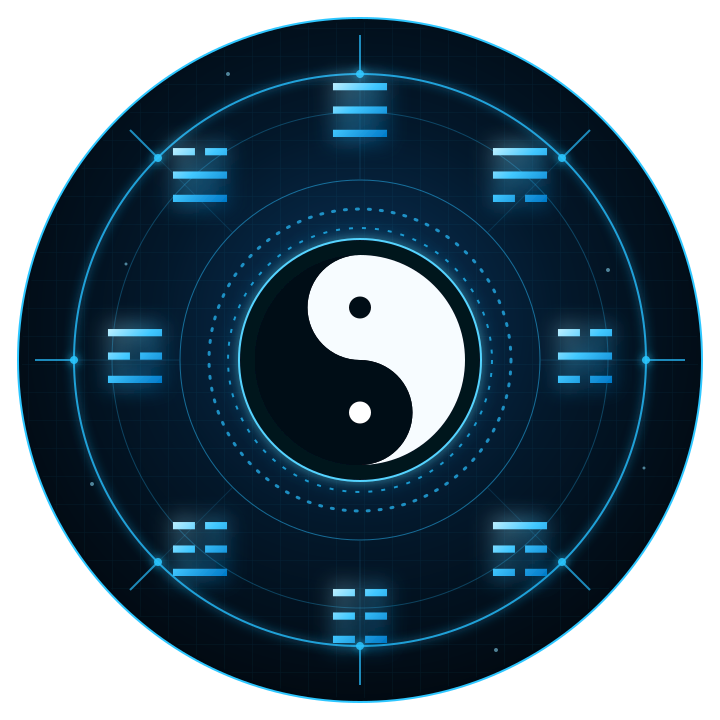

The situation is changing
You sense movement, but cannot yet name what is driving it.
YJ12 turns Yijing divination into a structured way to observe patterns, frame better questions and make decisions with greater clarity.

When conditions keep changing, experience alone can become noise. Yijing offers a disciplined lens for seeing relationships, timing and direction—before you commit to a path.
You sense movement, but cannot yet name what is driving it.
Logic gives several valid answers but no clear next move.
A sound decision made too early—or too late—can still fail.
This programme is for learners who want more than memorising hexagrams. It explores Yijing prediction as a coherent process: question, pattern, change, interpretation and responsible action.
Separate a useful enquiry from a vague wish so the reading has direction.
Read the structure of a situation instead of interpreting symbols in isolation.
See how present conditions may develop and where intervention is possible.
Turn a reading into a practical, considered next step without surrendering judgment.
A live, guided learning experience—not a collection of pre-recorded lessons.
Master Chew leads the programme step by step, connecting traditional Yijing principles with a systematic approach to prediction and decision-making.
Join from wherever you are. The programme is delivered live via Zoom over one weekend.
Day one
Build the conceptual framework needed to approach Yijing prediction systematically.
Day two
Develop the thinking process that connects a reading to real-world choices.
Detailed lesson sequence will be confirmed on the official registration page.
Continue to the official YJ12 page for full registration and payment details.
Early-bird tuition
Standard tuition MYR 1,800
Available through 31 August 2026
Continue to registration Official registration and payment take place on the YJ12 course page.Leave your contact details and the Academy will follow up. If an affiliate introduced you, their referral will remain attached to your enquiry.
If your question is not covered here, use the official registration page to contact Quantum YiJing.
Yes. It is a live two-day programme delivered via Zoom.
The programme is taught in Chinese, with English text transcription provided.
26–27 September 2026, from 10:00 AM to 5:00 PM on both days.
All registration buttons on this page take you to the official YJ12 registration page.